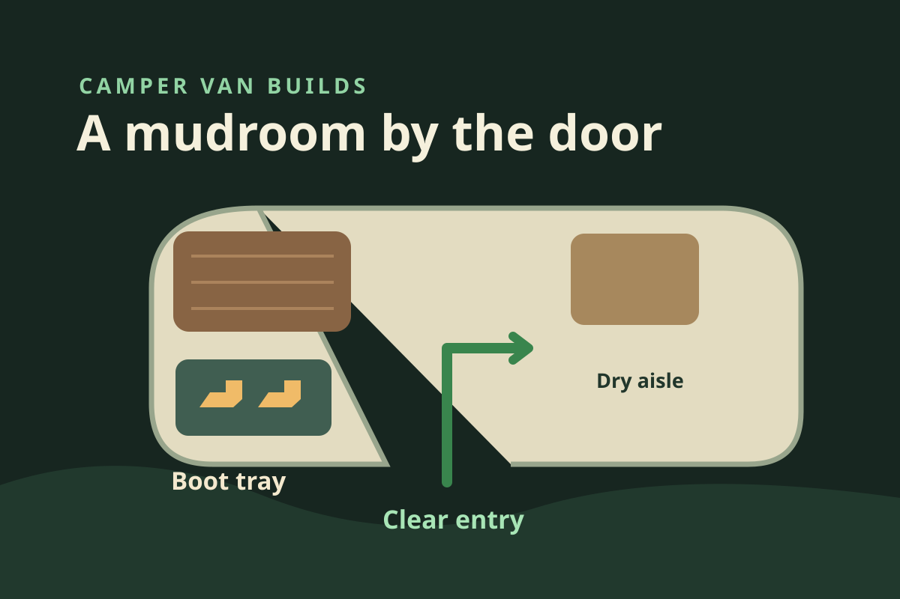

BUILDS
How to Set Up a Camper Van Mudroom Without Losing Your Aisle
The first thing you want after a rainy hike is a dry pair of socks. In a camper van, getting to them can mean stepping across the floor in muddy boots, setting your jacket on the bed, and spending the next morning wiping grit out of the door track. A small entryway setup gives the wet stuff somewhere to go as soon as you open the door.

Illustration: Van Life Insider
Think of this as a camper van mudroom that fits along one edge of the doorway. Start with a tray, a towel, and a spot to sit or steady yourself while parked. Try that arrangement before you give up floor space to another cabinet.
Start with the doorway you actually use
Open your usual entry door and look at the floor from outside. Where does your foot land? Where could you set down a wet pair of shoes without stepping over them on the next trip out? In many layouts, the space beside a bench is more useful than the center of the opening. In a rear-entry build, the equivalent might be the first corner you can reach without moving your cargo.
Measure the opening with the door closed as well as open. Then put your biggest boots on a flattened cardboard box and trace the space they need. Add room to lift the tray out without tipping it. Move the cardboard around until the door, step, and route through the van all stay clear. Check again at night, when the bed and any pull-out furniture are set up.
Give muddy shoes a tray you can lift out
A shallow, washable tray with a raised lip catches grit and small drips. Two pairs that fit flat are better than three stacked across the opening. If your boots are too large for the spot you marked, rotate them or try a narrower tray before changing the furniture.
Keep a small towel within reach to wipe the step or dab standing water off the tray. Make sure you can lift the tray from outside or at the threshold. Otherwise you'll carry the mess across the floor every time you clean it. After a wet trip, empty the tray and dry underneath it before putting it back.
Separate the place that catches drips from the place that dries gear
Put soaked items somewhere they can drip without wetting bedding, upholstery, or electrical equipment. A removable waterproof tote can hold muddy gear briefly, especially when you have to leave right away. Take the gear out to dry at the next opportunity. Sealing wet clothes in a bin keeps the mess contained during the drive, but it also keeps the clothes wet.
When you're parked, hang a damp shell where air can circulate and the door still works. On particularly wet days, dry what you can outside under shelter or take it to a place where you can spread it out. Give dry socks and indoor shoes a separate spot within reach of the door so you never have to cross the van to find them.
Plan a second position for driving
The best position for removing boots at camp may be the wrong place for a loaded tray on the road. Before moving, stow the tray, boots, and wet-gear tote in a compartment that latches or secure them using vehicle-approved cargo points and appropriate restraints. Keep the door release, step, and escape routes clear. Don't rely on a friction mat or adhesive hook to restrain gear in transit.
If the space only works with a permanent hook or bracket, check the vehicle manufacturer's upfitter guidance or consult a qualified installer before drilling. A removable setup is worth keeping if it already works.
Test it twice before you build around it
- Arrive with your hands full. While parked, carry a bag and a jacket to the door. Try changing shoes without setting either item on your bed.
- Leave in a hurry. Put the boots and tray in their travel position, then walk the route to the exit. See whether anything blocks the door or has to move a second time.
For example, a solo traveler might tuck one tray beside a bench and reserve a small cubby for indoor shoes. Two hikers might keep only the pair they're changing out of at the door and move the other pair to a secured washable tote. Neither setup needs to occupy an entire cabinet.
If you can come in dry, walk to bed without stepping around gear, and pack up without leaving anything loose, you're done. If one part still annoys you after two outings, change that part first. It's a lot easier to move a boot tray than to rebuild a bench.
Still deciding how your sleeping area will fit around the entry? See Fixed Bed vs. Convertible Bed: Which Van Layout Works for You?